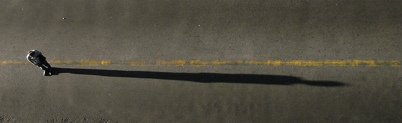

utenstat.no
utenstat.noHjernen er alene
4. august 2014 | Sondre Bjellås
Har du tenkt over hva du ønsker mer av i livet ditt, hva du ønsker å oppnå? Det er ikke alltid så lett å vite hva man ønsker seg, noen ganger vet man rett og slett ikke hvorfor man liker noe, fremfor noe annet.

Det er dette som er spennende med å være menneske, ved å være bevisst over oss selv og verden rundt oss. Vi har (egentlig) ingen kontroll over våre liv, annet enn at vi kan observere hva vi finner på å gjøre.
Ubalanse i hva vi får i oss av mat, kan lett påvirke våre preferanser. Vi er også konstant «bombadert» med ulike drifter som er i konflikt med hverandre. Vi har liten, eller ingen innsikt, i prosessene som gjør at vi velger det ene, fremfor det andre. Eksempelvis kan det være vi er med en god venn når vi blir sulten, da kan det hende at kroppen undertrykker behovet for å få i seg næring, fordi man ønsker å bruke mer tid sammen med vennen. Enkelte mener at dette er eksempel på fri vilje, at man har vilje til å velge hva man vil, eller ikke vil. Utfordringen til de som tror det, blir da: Hvorfor valgte man ikke bare å spørre vennen om de også kanskje var sulten, så kunne man gått sammen og spist noe mat?
Jeg har selv erfart gjentatte ganger at jeg har tatt avgjørelser om å forandre noe i livet mitt, for så å observere at jeg kommer på denne avgjørelsen flere ganger uten at jeg har gjort noen forandringer. Kroppen min vil liksom ikke gjøre de forandringene jeg allerede har bestemt meg for å gjøre. Er det mangel på viljestyrke? Jeg rasjonaliserer alltid avgjørelsen for å utsette forandringen, har alltid mange god unnskyldinger. Bør jeg føle noe negativt over at jeg ikke følger mine egne avgjørelser? Nei, jeg synes ikke det, fordi hva jeg gjør er på mange måter ute av min egen kontroll.
F.eks. burde jeg pusset opp hjemmekontoret, jeg er allerede godt i gang med arbeidet, men så kommer kvelden og jeg får lyst til å se en film. Slappe av og se film, fremfor å jobbe. Hvis målet mitt var å bli ferdig med oppussingen, vil man fra et ståsted for å oppnå ferdig oppusset kontor, anse en handling å se film, som en irrasjonell handling. Jeg gjør en handling, som ikke vil føre meg nærmere målet mitt. Men vi har alltid en hel rekke mål, som er i konflikt. Noen ganger velger vi å gå den lengste veien, den vanskeligste veien, for å nå et mål. Det vil for enkelte ansees som å være irrasjonelt, men kanskje hjernen til den som velger den tunge veien, har et ukjent mål om å erfare noe nytt på veien mot målet, fremfor å komme raskest mulig frem. Det er ikke engang sikkert at individet som tar den tunge veien, selv er bevisst klar over hvorfor man valgte den tunge veien, fremfor den korte og lette.
Når jeg tar avgjørelser, vet jeg veldig godt at forandring tar tid. Hjernen vår fungerer slik at den må trenes opp, den er som en muskel. Hvis vi ønsker å bli flinke til noe, må vi øve og øve slik at vi skaper mange neurale koblinger mellom cellene som korresponderer med den oppførselen vi ønsker å forbedre. Når jeg har tatt en avgjørelse om å utføre noe, vet jeg at jeg før eller senere vil kunne klare å utføre oppgangen. Men man må være tålmodig, man må ha forståelse at man trener å trene seg frem til målet.
Hjernen vår består i hovedsak av to deler, den gamle hjernen og den nye hjernen. Dette er ekstremt forenklet. Men man kan se på hjernen som at den gamle delene, som ble utviklet for millioner av år siden, er i større grad basert på instinkter og «hardkodet» oppførsel som har utviklet seg gjennom evolusjon og overlevelse.
Den nye hjernen, er fullstendig fleksibel og er i mindre grad styrt genetisk. Den formes slik vi lever livet vårt, og de koblingene som overlever, er de koblingene vi bruker. Denne delen ble utviklet, først og fremst som en mekanisme for hukommelse. Det er ineffektivt å bruke evolusjon for å lære seg hvordan man best overlever i naturen, så vi utviklet et dynamisk minne som gjør at vi kan lære av erfaringer. Det gjorde at «vi» (andre dyr før oss) ble bedre i stand til å lære av erfaringer, og forutsi fremtiden. Denne nyskapningen i hjernen, gjorde «oss» i stand til å utvikle oss enda mer. Den samme mekanismen gav oss muligheten for å kommunisere, slik at vi kunne dele erfaringer uten å selv måtte erfare. Fremfor at samtlige i familien måtte overleve et angrep fra en løve, var det nok at ett familiemedlem overlevde og kunne advare de andre om faren.
Den nye hjernen er et apparat for å forutsi fremtiden. Det er i all hovedsak hvordan den fungerer, den forutser hva den forventer å få av sanseopplevelser.
Når du ser bokstaven «e», vil de visuelle delene helt bak i hodet ditt starte en prosess med å sende signaler oppover i et hierarki av abstraksjoner, og signaler vil gå opp og ned. Signaler om at «e» ikke er en «a» vil bli sendt ut, slik at de delene av hjernen som gjenkjenner «a» vil bli hindret i å oppfatte «e» som en «a». Slik er det i mange lag av abstraksjoner i hjernen din, og på alle nivåene blir det tatt avgjørelser som er avgjørende for sluttresultatet, som du kanskje blir bevisst over.
Du har ingen innsikt, eller mulighet for å påvirke, hvorvidt du oppfatter en farge som blå eller lilla, når fargen ligger i fargespekteret mellom to grunnfarger. Slik er det også for alt annet som hjernen vår oppfatter.
Vi reagerer på impulser fra våre sanseorganer, og kombinerer denne informasjonen med historisk informasjon som er lagret som ikke-detaljerte varianter. Vi kombinerer tidligere erfaringer, som er lagret uten detaljer, med nøyaktige detaljer fra sanseorganene. Kombinasjonen av dette, blir det vi blir servert i vår bevissthet. Det at mange mennesker er flinke til å «spå» fremtiden, er helt naturlig da det er nettopp dette vår hjerne er spesielt god på. Likevel har jeg ekstremt liten innsikt i de neste ordene jeg kommer til å skrive på dette tastaturet. Prøv det selv, og analyser dine egne tanker og hva du skriver. Se hvor langt frem du virkelig klarer å forutsi de nøyaktige ordene du kommer til å formulere. For meg og forhåpentligvis for deg, vil det gi en liten åpenbaring i hvordan vi i virkeligheten faktisk bare observerer hva som hjernen avgjører og finner på å gjøre, helt utenfor vår bevisste kontroll.
Det er disse invariante mønsterene, altså minner uten detaljer som er mer generiske og gjenbrukbare, som gjør oss i stand til å gjenkjenne f.eks. elefanter i alle mulige varianter. Som tekst, som tegning, som abstrakt kunst, bilder fra ulike vinkler, osv…
Skal man gjøre gi opp, hvis man ikke har noen bevisst kontroll over sine handlinger og eget liv? Selvsagt skal man ikke det, vi har beviselig mulighet til å manipulere og påvirke universet og verden rundt oss. Vi kan komme opp med avgjørelser om å forandre oss selv, og observere disse forandringene etterhvert som de forekommer. Vi kan skape et bedre liv for oss selv, og for andre.
Hvorfor har vi et ønske om å skape et bedre liv? Fordi den gamle hjernen vår, har et instinktivt ønske om å unngå vonde situasjoner og lidelse. Vi liker instinktivt ikke å ha det vondt, så vi vil forsøke å unngå å ha det vondt. På toppen av dette instinktive behovet, har altså den nye hjernen skapt abstraksjoner for å forstå og konseptualisere dette behovet. Den forsøker å finne løsninger, og den er ofte veldig kreativ i å finne løsninger. Dessverre er mange av disse løsningene, også årsak til mye av lidelsene i verden.
Du gjør deg selv, og alle rundt deg, en tjeneste hvis du klarer å observere hvor negative mange av disse forespeilte løsningene virkelig er.
Tittel tatt fra Seigmen (opprinnelig deLillos), Hjernen er alene.
Foto av Montecruz Foto